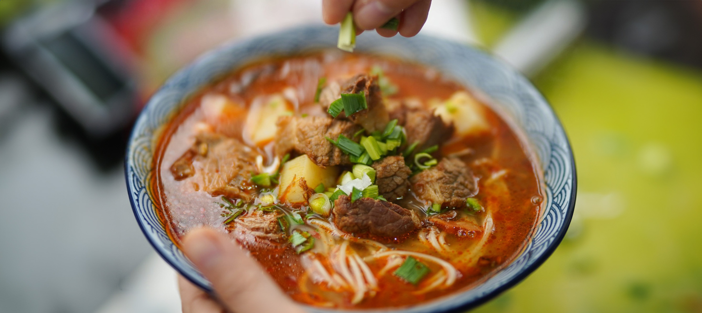

Ungarische Gulaschsuppe
Zubereitung
Zu Beginn werden die Kartoffeln und die Karotten geschält, gewaschen
und in kleine Würfel geschnitten. Auch die Champignons werden geputzt
und in Scheiben geschnitten. Zusammen mit den klein gehackten Zwiebeln
wird der Rindergulasch in einem Topf mit etwas Öl angebraten. Die
Champignonscheiben werden hinzugefügt und mit angebraten. Die Paprika
wird ebenso gewürfelt und in den Topf hinzugegeben. Das ganze wird nun
mit Salz und Pfeffer abgeschmeckt.
Als nächstes werden die Brühe und der Tomatensaft hinzugefügt und die
Suppe zum kochen gebracht. Mit den Gewürzen Kümmel, Tymian und
Paprikagewürz wird das ganze verfeinert und zum gewünschten Ergebnis
abgeschmeckt.
Mit geschlossenem Deckel muss die Gulaschsuppe nun ca. 45 Minuten auf
leichter Stufe köcheln.
Rezept erstellt von

Christian Becker